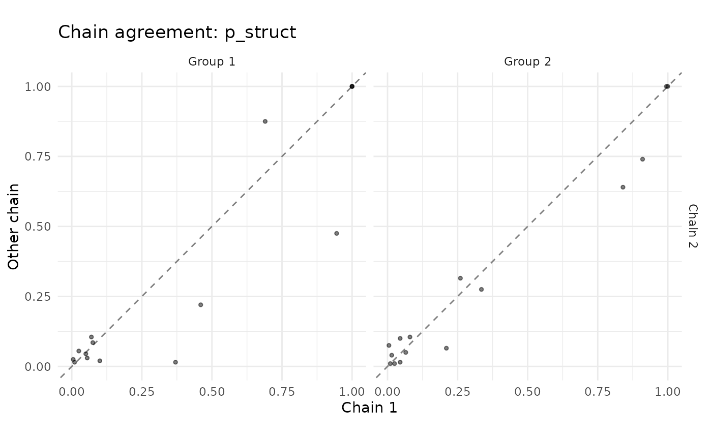

Scatter plot of per-edge posterior probabilities from each chain against chain 1. Points far from the diagonal mark edges on which the chains disagree, the standard convergence check for graph samplers.
Arguments
- fit
A
multiggm_fit_listwith at least two chains.- quantity
Column of
edge_probs()without the threshold suffix:"p_struct"(default),"p_exceed","p_union"or"p_cut".- type
"group"(default) or"pair".- c
Threshold for
"p_exceed"and"p_union".- scale
"precision"(default) or"pcor": the scale ofmean,sd,p_exceed_*,p_union_*andp_sign.
Examples
sim <- simulate_multiggm(K = 2, p = 6, n = 60, seed = 1)
fit <- multiggm_mcmc(data_list = sim$data_list, method = "ssvs", burnin = 200,
nsave = 200, nchains = 2, seed = 1, save_draws = FALSE)
plot_chain_agreement(fit)
